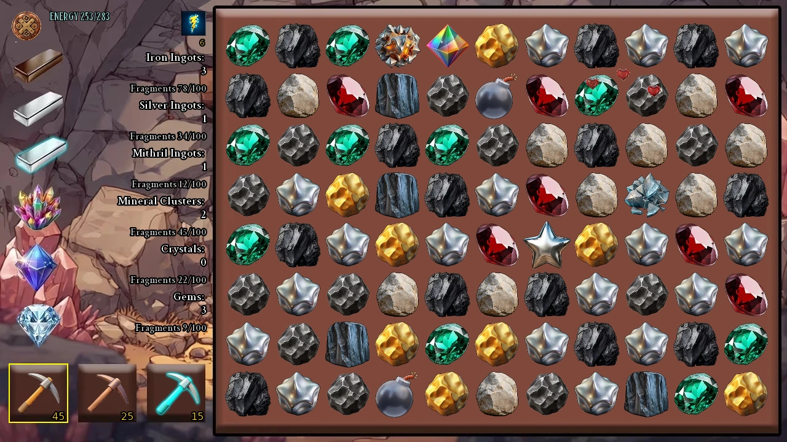
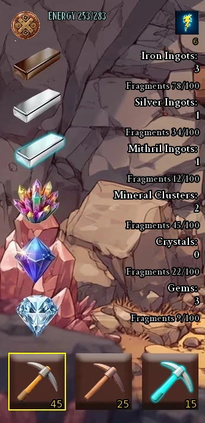
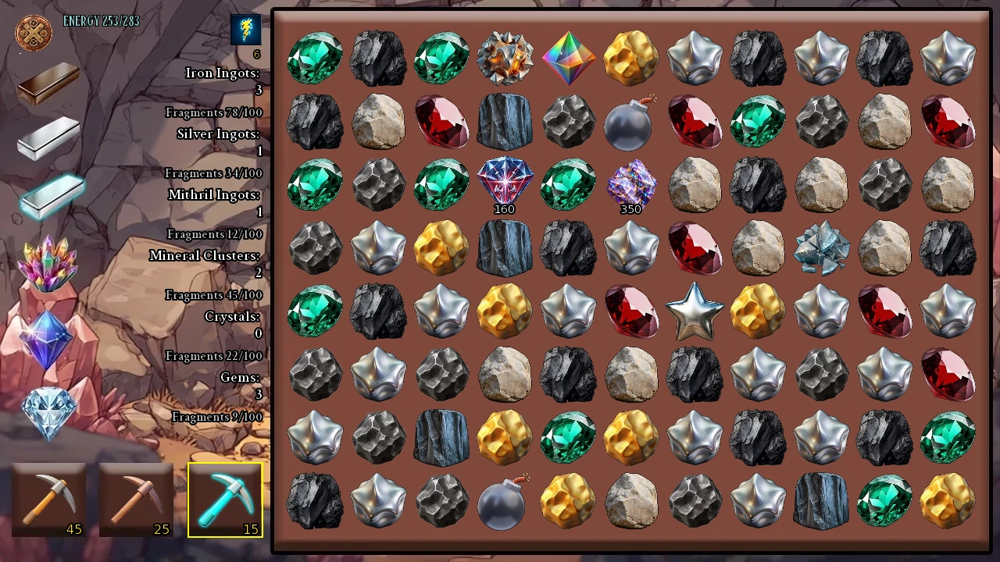
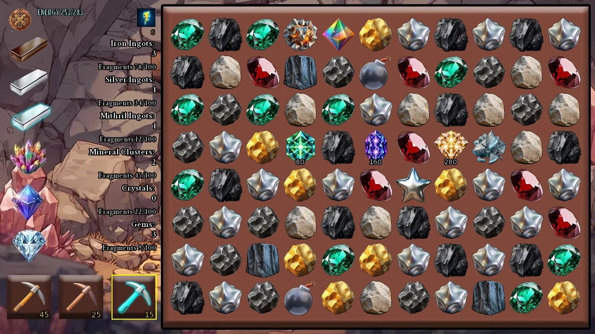
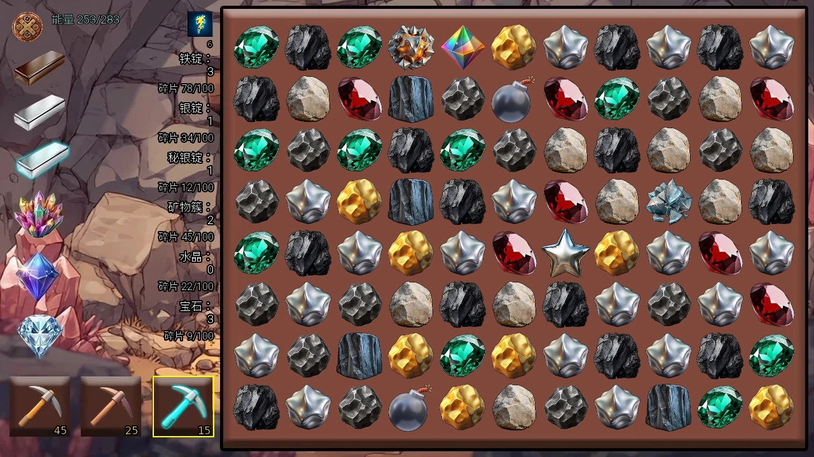
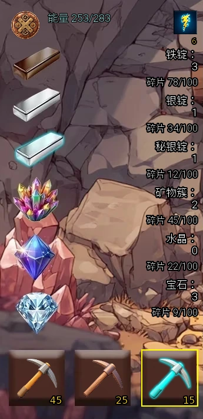
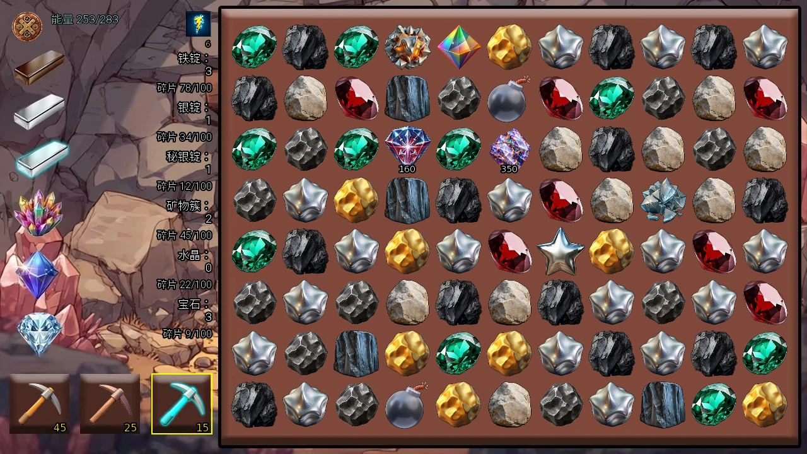
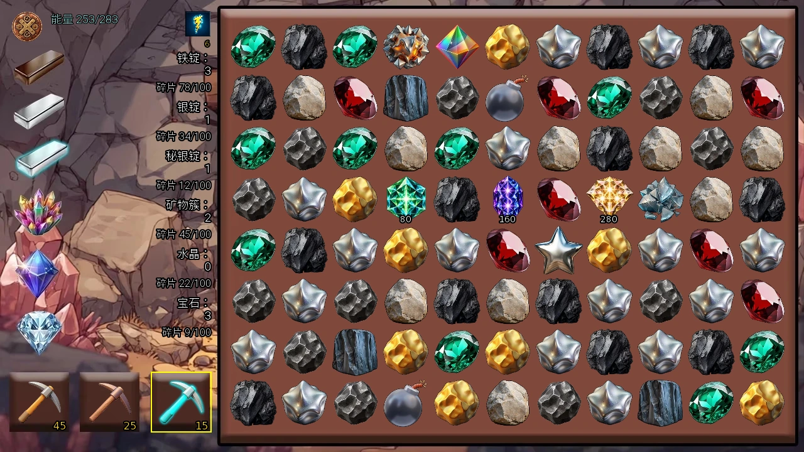

Select a screenshot to view the complete image. Screens show example inventories and progress.
Break tiles, let the falling pieces form matches, and collect materials on an 8 × 11 board. Start with the ordinary resource loop; return with more Energy and tools when you want to finish durable stones or hunt rare finds.
Start a mining visit
Choose Mining at Mountain Foothills, in the Medieval Village Outskirts. The location and activity are available without learning Gem’s Mining skill. That separate skill is for breaking dungeon walls.
- Check supplies before entry. You need at least one pickaxe of any type and 30 Energy to enter. A new character starts with one Iron Pickaxe.
- Allow for the entry cost. The action lists 30 minutes and spends 30 Energy. Your first swing needs another 10 Energy, so bring at least 40 or use an Energy item after entering. This is a visit cost; further swings do not each add another 30 minutes.
- Select a stocked tool at bottom left. The yellow border marks the selected type. Selection does not automatically change when that type runs out.
- Click one tile and wait for the board to settle. A valid swing spends one selected pickaxe and 10 Energy. Falling pieces, matches, and the chain they cause add no further swing cost.
- Use the X at top left or press Esc to leave. There is no final score or required board clear. Space does not exit.
An unsuitable hit on bedrock or glass, an empty selected tool, Energy below 10, or clicking during an animation does nothing and spends nothing. Entry already spent is not refunded when you leave. As with other actions, poor condition can extend the actual time taken.

Choose a pickaxe and keep Energy available
| Tool | Direct damage | What makes it useful |
|---|---|---|
| Iron | 1 | Breaks ordinary tiles and chips durable ore. Cannot break bedrock or glass. |
| Copper | 2 | Breaks bedrock in one hit. Cannot break glass. |
| Diamond | 5 | Breaks bedrock and glass in one hit. Also hits one random neighboring position, including diagonals, for free. |
Diamond’s extra hit deals 5 damage to durable ore, breaks an ordinary tile, or activates a power-up. It can also break bedrock or glass. The extra hit always targets a different position; it cannot hit your chosen stone twice. You can switch stocked tools between swings without a fee.
The top-left Energy item button spends one stored item to restore 25 Energy, or 50 after Willow’s Enhanced Healing upgrade, up to your maximum. An Energy tile restores 40. A Repair tile adds three pickaxes of the type used for that swing’s entire chain. These bonuses also work when a match or power-up collects the tile.
A direct Energy-tile hit gives up to 30 net Energy after its swing cost. A direct Repair-tile hit gives a net gain of two pickaxes of the used type. Both gains can be smaller at the relevant cap.
Where to restock
| Source | Cost or condition | Reward |
|---|---|---|
| Gem: Iron Pickaxes (x5) | $200; 10 minutes; once per game day. Find Gem at Mountain Foothills, 07:00–17:00. | 5 Iron Pickaxes; +1 Gem relationship. |
| Gem: Pickaxe Haul | 1 crystal; 15 minutes; requires the full version and the additional supporter-content access indicated by the action. No daily purchase limit. | 10 Iron, 10 Copper, and 10 Diamond Pickaxes; +2 Gem relationship. |
| Dungeon victories | 15% base drop chance; applicable loot bonuses can raise it. | One Iron on floors 1–20; Copper on 21–30; Diamond on 31–40; random type on 41–45. Minotaur gives Leather instead; special Infinity enemies can have different drops. |
| Successful heists | 10% chance after a successful exit. | One Copper in Gilded Row or one Diamond in Noble Quarter. |
| Medieval Back Alleys search | Encounter a pickaxe stash and choose to take it. | 2–5 Iron and 2–4 Copper; a Luck check can add one Diamond. |
You can hold 999 of each pickaxe type; excess additions are discarded. Mining itself has no visiting-hour restriction, even when Gem is absent.

Make the board work for you
You break a tile rather than swap two tiles. Pieces fall into the gap and new ones enter from above. A horizontal or vertical line of at least three identical basic tiles clears automatically and pays each tile’s reward. The basic types are Rock, Iron Ore, Gold, Coal, Metal, Emerald, and Ruby. Diagonals and durable special stones do not form these ordinary matches.
| Match length | Adjacent damage | Other effects |
|---|---|---|
| 3 | 5 | Activates adjacent power-ups. |
| 4 | 10 | Also collects adjacent Repair and Energy tiles. |
| 5 or more | 25 | Also collects adjacent Repair and Energy tiles. |
Matches do not simply clear all neighboring ordinary tiles. Look for a gap that will align a useful line, especially beside a durable stone or power-up.
| Power-up | Area |
|---|---|
| Bomb | A 3 × 3 square centered on the bomb. |
| Fireblock | Its whole horizontal row. |
| Magic Cube | Its whole vertical column. |
A connected power-up chain clears ordinary tiles, collects Repair and Energy, and activates other power-ups in its area. Durable ore takes 15 damage per affected position in that chain; overlapping blast areas do not multiply this damage. It pays only when broken. Bedrock and glass are unaffected by blasts.
What changes in a long cascade?
From the third falling-and-matching round of the same swing, a Rock next to any position consumed earlier in that chain can substitute for Coal, Iron, or Metal. All eight neighboring positions count for this rule. It cannot substitute for Gold, Emerald, or Ruby. Bombs activated at this depth also blast every Coal tile on the board. These effects reset for the next swing.
Each fresh board starts with four bedrock blocks. During refills, new bedrock has a 1.5% chance to appear while fewer than four blocks remain. Use Copper to remove an obstruction when that opens a useful match; keep Diamond available for glass and durable finds.
Understand the rewards: fragments first
The six ordinary resource counters track Iron Ingots, Silver Ingots, Mithril Ingots, Mineral Clusters, Crystals, and Gems. Every 100 fragments of one resource automatically become one whole unit; leftover fragments remain. For example, 99 Iron fragments plus two becomes one whole Iron Ingot and one fragment.
Every number in the next table is a fragment reward, not a whole ingot, crystal, or gem. “Random” means each listed choice is equally likely unless a percentage is shown. Rewards apply when the tile is consumed by a hit, match, or blast.
| Tile | HP | Fragments on break |
|---|---|---|
| Rock | 1 | One: 50% Iron, 40% Silver, 10% Mithril. |
| Iron Ore | 1 | 1 Iron; 10% chance of one random Silver, Mithril, Cluster, Crystal, or Gem. |
| Gold | 1 | 1 Iron + 1 Silver; 10% chance of one random Mithril, Cluster, Crystal, or Gem. |
| Coal | 1 | 1 Iron; separate 15% chance of 1 Mithril and 10% chance of 1 Gem. |
| Metal | 1 | Three fragments, each randomly Iron, Silver, or Mithril. |
| Metal Star | 3 | 2 Iron + 2 Silver + 2 Mithril + one random Cluster, Crystal, or Gem. |
| Metal Fragments | 8 | 1 Iron + 1 Silver + 1 Mithril. |
| Molten | 5 | 2 Iron + 1 Silver + 1 Mithril; 40% chance of one random Cluster, Crystal, or Gem. |
| Bedrock | One compatible hit | Two fragments, each randomly one of the six resources. |
| Emerald | 1 | 1 Cluster; 40% chance of one random Crystal or Gem. |
| Ruby | 1 | 2 Clusters; 20% chance of one random Crystal or Gem. |
| Green, Blue, or Pink Panther | 10 | Three fragments, each randomly Cluster, Crystal, or Gem. All three colors work alike. |
| Rainbow Gem | 15 | 3 Clusters + 1 Crystal + 1 Gem. |
| Rose Gem | 30 | 1 of each of the six resources. |
| Iridescent | 25 | 2 of each of the six resources. |
Energy and Repair tiles have 1 HP and give their named bonuses instead of fragments. Glass yields no material; breaking it opens space. Power-ups have no separate material prize, but the tiles they consume pay normally.
Whole Crystals and Gems join your main inventory. Ingots, Clusters, and unlocked Chronium are shown among your supplies. Save your game normally to retain progress between play sessions. Gastoff’s forge spends whole materials, so a display of 10/100 fragments is not ten ingots.
Key stones and Chronium
| Find | Starting HP | Reward |
|---|---|---|
| Sword, Brute, Balance, Elemental, or Twilight Stone | 200 | The corresponding unique Soul Stone, starting at level 1. |
| Queenstone or Aether Stone | 400 | The corresponding unique Soul Stone, starting at level 1. |
| Chronium ore | 400 | 1 whole Chronium; no fragment conversion. |
Only unowned mining stones can appear. At most one key-stone deposit can appear in each visit, even if you leave it unbroken. Phantom Stone is obtained elsewhere; it does not appear as one of these seven mining deposits.
Key-stone and Iridescent assistance after 60 swings
The ordinary key-stone category has a 0.013% chance per ordinary tile-generation roll, before priority rules. One swing can generate many tiles, so this is not the chance per click.
After 60 accepted paid swings in one visit, each ordinary tile-generation check has a 3% chance to offer an eligible rare find. The candidates are each still-unowned mining stone, provided no key stone has appeared this visit, and Iridescent, provided none has appeared this visit. Each candidate is equally likely. A key-stone appearance removes the key-stone candidates; an Iridescent appearance removes its candidate. When both have appeared, this assistance stops. Ordinary Iridescent appearances can still happen.
This improves the chance; it does not guarantee a rare item on swing 60. A Luck Potion can retry this check and supported fragment-bonus checks. It does not increase every ordinary tile’s appearance chance.
Unlock Chronium before hunting it
Later in the main story, Cid offers Something That Holds at the Future modification clinic. Complete his Chronium introduction in your current adventure: it gives one whole piece and unlocks further acquisition. Chronium cannot appear in mining before that introduction.
After unlocking it, raw Chronium ore has a 0.01% chance per eligible ordinary tile-generation roll. It has no pity guarantee and no Luck Potion retry. At most one Chronium deposit can appear per visit; this is separate from the key-stone limit. Breaking it awards one whole piece. Seeing it without breaking it gives nothing.
A 400-HP deposit would take 80 direct Diamond hits, 200 Copper hits, or 400 Iron hits without other damage. Plan enough supplies, then use nearby matches and power-ups to reduce that cost. The tool that lands the last hit does not change the reward.
Chronium also has other late-game acquisition routes, including eligible Infinity bosses, long Unlimited defense runs, Mountain Walks, Medieval Back Alleys searches, and a qualifying Dwarf Miner encounter. Mining is a rare additional route rather than a fixed-yield supply. See Cid and Infinity Dungeons for connected progression. Each final Chronium armor upgrade at Gastoff’s forge costs 10 whole Chronium and replaces the corresponding Gemmed piece.

Upgrade owned Soul Stones with enhancement ore
Own five different Soul Stones to unlock enhancement tiles. The count includes the seven mining stones and Phantom Stone. Enhancements can appear on the starting board as well as during refills.
| Enhancement | HP | Total levels awarded | Ordinary appearance chance |
|---|---|---|---|
| Small · green | 100 | 5 | 0.35% |
| Medium · purple | 180 | 10 | 0.125% |
| Large · gold | 300 | 20 | 0.025% |
These are chances per eligible ordinary tile-generation roll. Each awarded level goes to one randomly chosen owned stone. A Small enhancement gives five levels in total, not five to every stone; multiple levels can go to the same recipient. You cannot choose the recipients. Direct hits, Diamond’s extra hit, adjacent matches, and blasts can all finish the tile.
The separate 60-swing guarantee
With five stones owned, every accepted paid swing advances the enhancement counter. Any enhancement appearance resets it, before that tile is broken. After 60 paid swings without an appearance, an enhancement is queued for the next refill opening: 70% Small, 25% Medium, 5% Large. If your swing only chips a durable stone and opens no gap, you must create a gap before it can arrive.
This guarantee can repeat in the same visit. It guarantees an ore tile appearing, not automatic levels. It is independent of the key-stone/Iridescent check and does not help Chronium.
If you want to raise a specific owned stone instead, Theneas’s Soul Stone Upgrade service offers a separate route using Infinity Dungeon drops. Mining’s enhancement allocations remain random.

Decide when to spend and when to leave
- For ordinary materials: favor cheap breaks that create matches. Metal gives three metal fragments from a 1-HP tile; a tough-looking tile is not automatically better value.
- For a rare stone: work around it to create adjacent matches and power-up hits. Damage already dealt remains while you stay on the board. Iron and Copper can finish it too.
- For a longer visit: bring Energy items and tools before entry. The 60-swing systems count paid swings, so free hits do not advance them. Energy tiles and Repair tiles help extend supplies.
- Before exiting: finish a wanted rare deposit if you can. A new visit resets the board; it is not a way to carry half-broken ore forward.
You keep collected fragments, whole resources, unused tools, acquired key stones, and levels already awarded. You lose the current board, unfinished tile HP progress, unbroken ore rewards, the visit’s discovery counters, and any queued enhancement. Costs already spent remain spent.
Common problems
Mining is greyed out
Check that you have at least 30 Energy and one pickaxe of any type. Gem’s dungeon-wall Mining lesson is not required for this board.
I entered, but clicking does nothing
Entry spent 30 Energy. Check that at least 10 remains, the yellow-bordered tool has stock, the animation has finished, and the tool can break your target. Select another stocked tool manually when the current one runs out.
I mined crystals but my crystal total did not increase
Check the fragment line. Only each complete set of 100 becomes a whole crystal. The same rule applies to all six ordinary mining resources.
The blast did not destroy my stone
Durable stones keep their remaining HP. A power-up chain deals 15 damage to each affected position; overlapping blasts in that same chain do not multiply it. Bedrock and glass require a compatible pickaxe.
No enhancement appeared after 60 clicks
Own five different Soul Stones first. Count accepted paid swings since the last enhancement appeared, then create a refill opening for a queued tile. An earlier natural appearance restarted the counter.
I found a key stone but cannot find another
The one-per-visit limit is used when a stone appears, even before collection. A fresh visit can offer another unowned stone, but leaving discards the current board.
I cannot find Chronium
Complete Cid’s introduction first. Its 0.01% eligible tile chance has no 60-swing guarantee or Luck Potion retry, and only one deposit can appear per visit. The left column’s six fragment counters are not a Chronium counter.
Related guides
在8 行 × 11 列的矿盘上敲碎矿块，让下落的矿块形成消除，积累材料。下文所称的精力，在采矿界面中显示为「能量」。第一次先熟悉资源与工具；想开采高耐久矿石、寻找稀有物品时，再准备足够的精力和镐。
第一次采矿，从哪里进入
前往中世纪 → 村庄郊外 → 山脚（Mountain Foothills），选择「采矿」。地点和小游戏不要求先学会 Gem 的「采矿」技能；她教授的是地下城破墙技巧，两者是不同入口。
- 先检查补给。入场需要至少 30 精力，并持有任意一种镐。新角色自带 1 把铁镐。
- 算上入场消耗。行动标注耗时 30 分钟，进入时扣除 30 精力。第一次挥镐还要 10 精力，因此直接开始操作至少要带 40 精力；也可以入场后使用精力恢复品。30 分钟是这次入场的耗时，不是每挥一次都再过 30 分钟。
- 在左下角选择有库存的镐。黄色边框表示当前选择。该类镐用完后，不会自动切换到其他类型。
- 点击一个矿块，再等矿盘停止下落。每次有效挥镐消耗 1 把所选镐和 10 精力；由此产生的消除、连锁和额外击打不再加收这笔费用。
- 点击左上角的 X，或按 Esc 离开。没有必须清完的关卡或最终分数。空格键不会退出。
动画未结束、所选镐已用完、精力不足 10，或用不合适的镐点击基岩／玻璃时，这次点击不会生效，也不会扣除镐和精力。离开不会退还已经支付的入场费用。与其他行动一样，状态不佳可能延长实际耗时。

选好镐，也要留意精力
| 工具 | 直接伤害 | 适合用途 |
|---|---|---|
| 铁镐 | 1 | 敲碎普通矿块、逐步开采高耐久矿石。无法破坏基岩或玻璃。 |
| 铜镐 | 2 | 一击破坏基岩。无法破坏玻璃。 |
| 钻石镐 | 5 | 一击破坏基岩和玻璃；还会免费击打周围随机一个位置，包括斜角。 |
钻石镐的额外击打会对高耐久矿石造成 5 点伤害，也能敲碎普通矿块、触发特殊矿块，或破坏基岩和玻璃。它一定落在另一个位置，不能对同一目标连打两次。两次挥镐之间可以免费切换有库存的工具。
左上角的恢复品按钮会消耗 1 个库存恢复品，恢复25 精力；获得 Willow 的强化治疗升级后改为50，均不超过上限。精力矿块恢复 40 精力；修理矿块补充 3 把本次挥镐所用类型的镐。同一次连锁中收集到的修理矿块，也按发起这次挥镐时的类型结算。
直接敲碎精力矿块，扣除挥镐费用后最多净回 30 精力；直接敲碎修理矿块则净增 2 把对应的镐。接近上限时，实际收益可能较少。
镐用完了，到哪里补充
| 来源 | 消耗或条件 | 获得内容 |
|---|---|---|
| Gem：铁镐（x5） | $200；10 分钟；每个游戏日限购一次。Gem 在山脚的时间为 07:00–17:00。 | 5 把铁镐；Gem 关系 +1。 |
| Gem：镐子采购（Pickaxe Haul） | 1 个水晶；15 分钟；需要完整版，以及该行动提示的额外支持者内容权限。没有每日购买次数限制。 | 铁镐、铜镐、钻石镐各 10 把；Gem 关系 +2。 |
| 地下城战斗胜利 | 基础掉落概率 15%；适用的掉落加成可提高概率。 | 1–20 层为铁镐，21–30 层为铜镐，31–40 层为钻石镐，41–45 层随机一种，每次 1 把。牛头人以皮革替代；部分无限地下城敌人使用其他掉落规则。 |
| 成功撤离劫盗行动 | 成功退出后有 10% 概率。 | 鎏金街获得 1 把铜镐，贵族区获得 1 把钻石镐。 |
| 搜索中世纪后巷 | 遇到遗弃的镐后，选择拿走。 | 2–5 把铁镐、2–4 把铜镐；通过幸运检定可再得 1 把钻石镐。 |
每种镐最多持有999 把，超过上限的补充会被舍弃。采矿小游戏本身没有开放时段限制，Gem 不在场也能进入。

用下落与连锁，减少挥镐次数
这里的操作是敲碎一个矿块，而不是交换两个位置。空位上方的矿块会下落，顶部补入新矿块；相同的基础矿块横向或纵向连成至少 3 个，就会自动消除并逐块结算奖励。基础类型包括岩石、铁矿、金矿、煤、金属、绿宝石和红宝石。斜线不算，高耐久的特殊矿石也不参加这种普通三消。
| 连成数量 | 相邻伤害 | 其他效果 |
|---|---|---|
| 3 个 | 5 | 触发相邻的特殊矿块。 |
| 4 个 | 10 | 还会收集相邻的修理与精力矿块。 |
| 5 个及以上 | 25 | 还会收集相邻的修理与精力矿块。 |
相邻效果不会把周围所有普通矿块一起清掉。落镐前先看：敲掉这个位置后，能否拼出一条消除线，尤其是靠近高耐久矿石或特殊矿块的线。
| 特殊矿块 | 作用范围 |
|---|---|
| 炸弹 | 以自身为中心的 3 × 3 区域。 |
| 火焰块（Fireblock） | 所在的整条横行。 |
| 魔方（Magic Cube） | 所在的整条纵列。 |
同一条特殊矿块连锁会清除范围内的普通矿块、收集修理与精力矿块，并触发其他特殊矿块。范围内的高耐久矿石每个位置在该次连锁中承受 15 点伤害；多个爆破范围重叠也不会在这一次连锁中反复叠伤。只有真正敲碎矿石才会拿到奖励。基岩和玻璃不受爆破影响。
长连锁还有哪些变化？
同一次挥镐进入第三轮下落消除后，若岩石周围八格中有位置在本次连锁中被消耗，这块岩石就能代替煤、铁矿或金属参与消除；不能代替金矿、绿宝石或红宝石。在这一阶段触发的炸弹还会炸到整张矿盘上的煤。下一次挥镐会重新计算这些效果。
每张新矿盘起始有 4 块基岩。补入新矿块时，若盘上基岩不足 4 块，每个补入位置有 1.5% 概率生成基岩。挡住关键消除线时，可以用铜镐清掉；钻石镐则优先留给玻璃和高耐久目标。
普通资源先给碎片，满 100 才合成
左侧六项普通资源是铁锭、银锭、秘银锭、矿物簇、水晶和宝石。同种资源每积累 100 碎片，会自动变成 1 个完整单位，并保留余数。例如，已有 99 个铁碎片，再获得 2 个，就会增加 1 个完整铁锭，剩下 1 个碎片。
下表中的所有材料数量都是碎片，不是完整的锭、水晶或宝石。「随机」表示列出的选项等概率，另有百分比说明的除外。直接敲碎、消除或爆破收集，都会按对应矿块结算。
| 矿块 | 耐久 | 敲碎后的碎片 |
|---|---|---|
| 岩石 | 1 | 共 1 个：50% 为铁，40% 为银，10% 为秘银。 |
| 铁矿 | 1 | 铁 1；另有 10% 概率随机获得银、秘银、矿物簇、水晶或宝石 1 个。 |
| 金矿 | 1 | 铁 1、银 1；另有 10% 概率随机获得秘银、矿物簇、水晶或宝石 1 个。 |
| 煤 | 1 | 铁 1；另分别有 15% 概率获得秘银 1、10% 概率获得宝石 1，两项独立判定。 |
| 金属 | 1 | 共 3 个，每个分别从铁、银、秘银中随机。 |
| 金属星 | 3 | 铁 2、银 2、秘银 2；再随机获得矿物簇、水晶或宝石 1 个。 |
| 金属碎块 | 8 | 铁、银、秘银各 1。 |
| 熔融矿块 | 5 | 铁 2、银 1、秘银 1；另有 40% 概率随机获得矿物簇、水晶或宝石 1 个。 |
| 基岩 | 合适的镐一击击碎 | 共 2 个，每个分别从六种资源中随机。 |
| 绿宝石 | 1 | 矿物簇 1；另有 40% 概率随机获得水晶或宝石 1 个。 |
| 红宝石 | 1 | 矿物簇 2；另有 20% 概率随机获得水晶或宝石 1 个。 |
| 绿豹／蓝豹／粉豹 | 10 | 共 3 个，每个分别从矿物簇、水晶、宝石中随机。三种颜色的收益规则相同。 |
| 彩虹宝石 | 15 | 矿物簇 3、水晶 1、宝石 1。 |
| 玫瑰宝石 | 30 | 六种资源各 1。 |
| 虹彩矿块（Iridescent） | 25 | 六种资源各 2。 |
精力与修理矿块耐久都是 1，提供对应补给，不给材料碎片。玻璃没有材料奖励，敲掉只是腾出空间。炸弹等特殊矿块本身也没有额外材料奖，但它们消耗的矿块会正常结算。
完整水晶和宝石进入主背包；锭、矿物簇以及解锁后的时源矿可在补给物资中查看。结束游玩前仍要正常保存游戏。Gastoff 的锻造服务消耗完整材料，因此「碎片 10/100」并不等于持有 10 个锭。
灵魂石与时源矿：出现后还要采完
| 矿石 | 初始耐久 | 奖励 |
|---|---|---|
| 剑石、蛮力之石、平衡之石、元素之石、暮光之石 | 200 | 对应的独特灵魂石，初次获得为 1 级。 |
| 女王石、以太之石 | 400 | 对应的独特灵魂石，初次获得为 1 级。 |
| 时源矿原矿 | 400 | 1 个完整时源矿，不经过碎片合成。 |
只会出现尚未拥有的采矿灵魂石。每次入场最多出现一块灵魂石矿石，即使还没采完，也已占用本次名额。幻影之石来自其他途径，不在这七种采矿矿石之中。
挥镐 60 次后，灵魂石与虹彩矿块的额外机会
在普通矿块生成判定中，灵魂石类别的基础概率为 0.013%，还要考虑优先生成规则。一次挥镐可能补入很多矿块，因此这不是每次点击的概率。
同一次入场内累计60 次有效且付费的挥镐后，每次普通矿块生成判定都有 3% 概率改为生成一项符合条件的稀有物。候选包括每一种尚未拥有的采矿灵魂石，以及虹彩矿块：本次已经出现过灵魂石，就移除所有灵魂石候选；本次已经出现过虹彩矿块，就移除它的候选。各个候选等概率，两类都出现后，这项额外判定停止。普通生成仍可能出现更多虹彩矿块。
这只是提高后续机会，不保证第 60 次挥镐立刻出现稀有物。幸运药水能重试这项判定和部分碎片追加奖励判定，但不会统一提高所有矿块的普通出现概率。
先解锁时源矿，再考虑专门寻找
主线推进到后期时，Cid会在未来时代的改造诊所提供「坚守之物」（Something That Holds）事件。先在当前冒险中完成他的时源矿介绍：事件会赠送 1 个完整时源矿，并开放后续获取途径。在此之前，采矿不会生成时源矿。
解锁后，时源矿原矿在每次符合条件的普通矿块生成判定中有0.01%概率出现。它没有保底，也不受幸运药水重试影响。每次入场最多出现一块，与灵魂石的单次名额分别计算。完全采碎后才获得 1 个完整时源矿；只发现、未采完则没有奖励。
不计算其他伤害时，400 耐久需要钻石镐直接敲 80 次、铜镐 200 次或铁镐 400 次。先备好补给，再利用旁边的消除和特殊矿块减少消耗。最后一击用什么镐，不会改变奖励。
时源矿还可通过部分无限地下城首领、较长的无限防守、现代山路徒步、中世纪后巷搜索，以及符合条件的矮人矿工遭遇获得。采矿是额外的低概率来源，不是每次都有固定产出的供应方式。相关进度可参阅Cid与无限地下城。Gastoff 的每件最终时源矿护甲升级消耗 10 个完整时源矿，并替换对应的镶宝石护甲。

灵魂石强化矿：为已持有的石头加级
持有五种不同的灵魂石后，矿盘可以出现强化矿。计数包括七种采矿灵魂石和幻影之石。符合条件后，初始矿盘与后续补入矿块都可能出现强化矿。
| 强化矿 | 耐久 | 总升级次数 | 普通出现概率 |
|---|---|---|---|
| 小型 · 绿色 | 100 | 5 | 0.35% |
| 中型 · 紫色 | 180 | 10 | 0.125% |
| 大型 · 金色 | 300 | 20 | 0.025% |
概率按每次符合条件的普通矿块生成判定计算。每一次升级都随机选中一颗已拥有的灵魂石。小型矿提供的是总共 5 级，不是每颗石头都加 5 级；同一颗可能被选中多次，玩家不能指定分配对象。直接击打、钻石镐额外击打、相邻消除和爆破都能采碎强化矿。
独立计算的 60 次挥镐保底
持有五种灵魂石后，每次有效且付费的挥镐都会推进强化矿计数。任何强化矿一出现，计数就会重置，不必等采碎。连续 60 次挥镐都未出现强化矿后，会安排一块在下一个补入空位出现：小型 70%、中型 25%、大型 5%。如果这一镐只是削减高耐久矿石、没有产生空位，就要先敲出空位，等待补入。
同一次入场可以反复触发这项保底。它保证的是强化矿出现，不是自动发放等级；与灵魂石／虹彩矿块的额外判定分别计算，也不会帮助生成时源矿。
如果想指定某一颗已持有的石头升级，可以查看Theneas 的灵魂石升级服务，用无限地下城材料进行升级。采矿强化的分配仍然是随机的。

什么时候继续挖，什么时候离开
- 主要收集普通材料：优先考虑低消耗、能拼出消除的落点。金属矿块只有 1 耐久，却给 3 个金属类碎片；外观坚硬的矿块不一定更划算。
- 准备采一块稀有矿石：围绕它制造相邻消除或特殊矿块伤害。只要仍在这张矿盘上，已造成的伤害就会保留；铁镐和铜镐也能完成开采。
- 打算长时间采矿：入场前备好恢复品和镐。两种 60 次挥镐机制都只计付费的有效挥镐，免费连锁不增加次数；精力矿块和修理矿块能帮助延长本次采矿。
- 准备离开：尽量先采完想要的稀有目标。重新入场会换矿盘，不能把采到一半的原矿带到下一次。
离开后保留：已获得的碎片、完整资源、剩余镐、已采得的灵魂石，以及已经发放的等级。离开后清除：当前矿盘、未完成矿石的耐久进度、未采碎矿石的奖励、本次发现计数，以及排队等待出现的强化矿。已经花掉的资源不会退还。
常见问题，先检查这些地方
「采矿」为什么是灰色？
检查是否至少有 30 精力，并持有任意一种镐。山脚小游戏不要求先学 Gem 的地下城破墙技能。
已经进来了，为什么点击没有反应？
入场已扣除 30 精力。确认还剩至少 10 精力、黄色边框选中的镐有库存、动画已结束，而且工具能破坏目标。当前类型用完后，要手动选择另一种有库存的镐。
挖到了水晶，为什么背包水晶没有增加？
先看碎片一行。同种碎片凑满 100 才会增加 1 个完整水晶；六种普通采矿资源都遵循这个规则。
爆破为什么没有炸碎灵魂石？
高耐久矿石会保留剩余耐久。同一条特殊矿块连锁对范围内每个位置造成 15 点伤害，范围重叠不会在该次连锁中重复叠伤。基岩和玻璃则必须用合适的镐处理。
点了 60 次，为什么没有强化矿？
先确认持有五种不同的灵魂石。计算的是上次强化矿出现后的有效付费挥镐次数；排队的强化矿还需要一个补入空位。期间自然出现过强化矿，就已重置计数。
看到一颗灵魂石后，为什么找不到第二颗？
每次入场的名额在矿石出现时就已用掉，不需要等采到手。下次入场才可能出现另一颗未持有的灵魂石，但离开会丢弃当前矿盘。
为什么一直找不到时源矿？
先完成 Cid 的介绍事件。时源矿每次符合条件的普通生成判定只有 0.01% 概率，不享受 60 次挥镐机制或幸运药水重试，每次入场也最多出现一块。左侧六种碎片资源的计数并不包含时源矿。
相关攻略
Adapted and updated from the community Chronoromancer Wiki. Community source and history · CC BY-SA 4.0. Game images © Chronoromancer Studio.